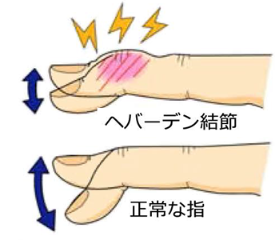
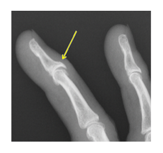

ヘバーデン結節・ブシャール結節
ヘバーデン結節・ブシャール結節とは
ヘバーデン結節とブシャール結節は、どちらも指の関節に起こる変形性関節症で、ヘバーデン結節は指の第一関節（DIP関節）、ブシャール結節は第二関節（PIP関節）に痛み、腫れ、変形が生じる病気です。

症状
関節の腫れ、痛み、変形
指が曲がったまま伸びなくなる
可動域に制限が起こる
原因
指の骨と骨の間の軟骨がすり減って、骨が変形することで症状が起こります。
明確な原因はわかっていませんが、加齢による関節軟骨のすり減り、指の使いすぎ、遺伝的要因などが関与するとされています。
また、40代以降（更年期）の女性に多くみられるため、女性ホルモンの変化が大きく関わっていると考えられています。
診断
関節リウマチと症状が似ていますが、リウマチは全身の複数の関節が左右対称に腫れるなど、異なる特徴があります。
血液検査やレントゲン検査を用いた専門医による診断が重要です。

治療
基本的に根本治療はなく、症状の緩和や進行抑制を目的とした対症療法が行われます。
まずは1ヶ月、週に1～2回（約20～40分を目安）のリハビリをおすすめしています。
リハビリの内容は、超音波機器、ホットパック、テーピング、生活指導などです。
もし症状が良くなれば、回数を減らすなどスケジュールの調整をします。